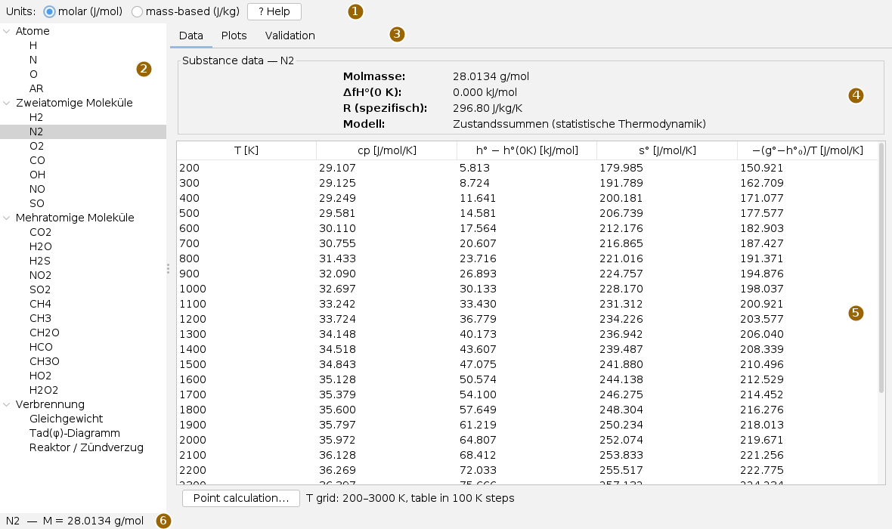
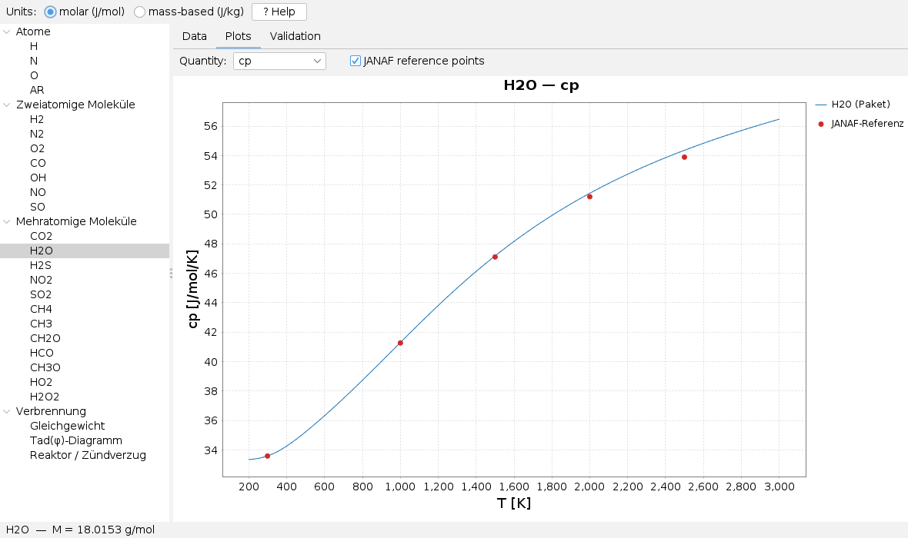
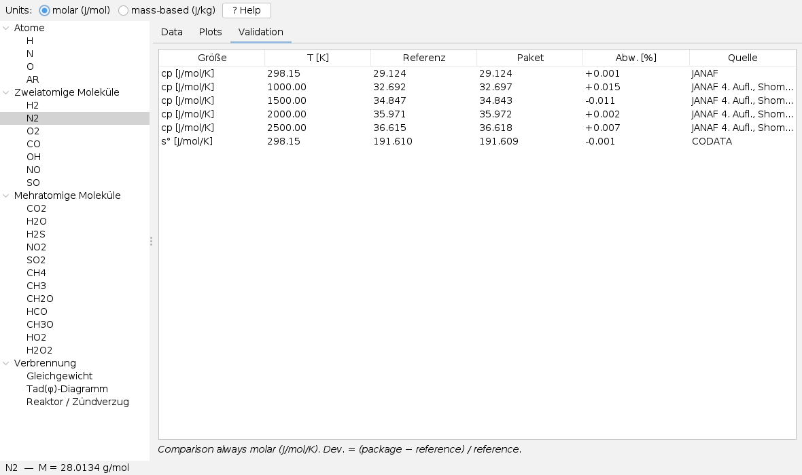
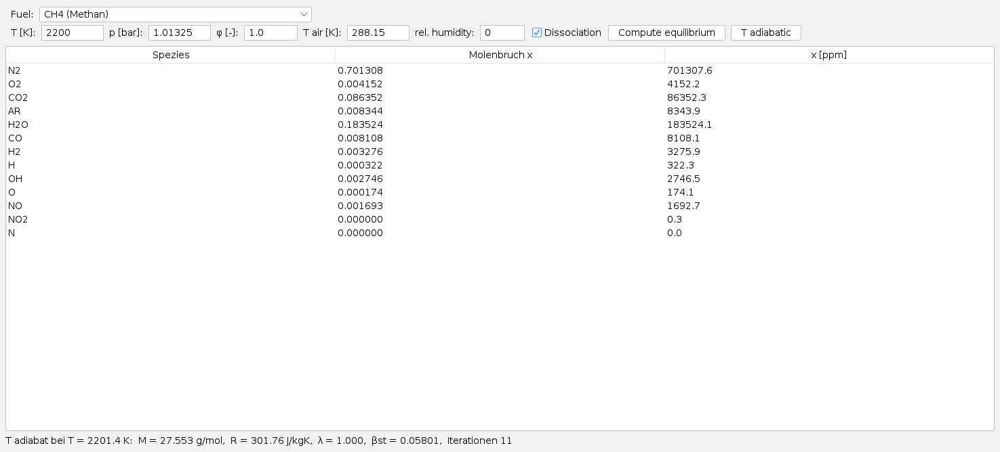
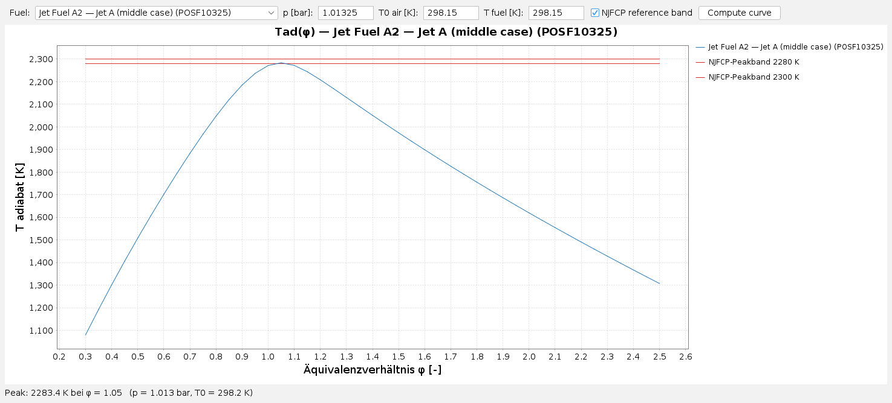
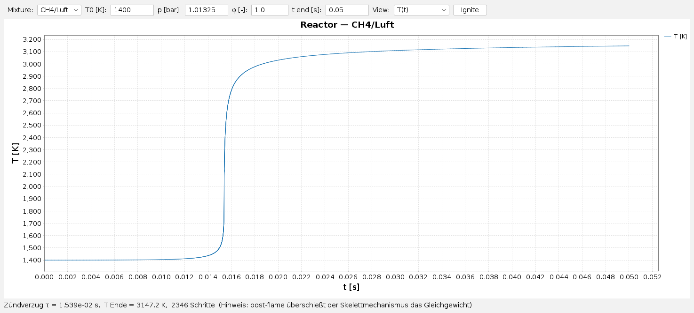

Using Thermo Properties
User page, as of 5 October 2026. How to view the properties of a species as a table and a chart, compare them with the literature, and use the three tools to compute a combustion equilibrium, a flame temperature curve and an ignition delay. The pictures are screenshots of the app.
Parts of the English interface still appear in German, among them the tree, the substance data, the column headings and the result lines. Labels marked * below are quoted as the interface shows them.
The window
Open the app from the Apps menu with Open Thermo Properties… or with Alt+T. It opens no files; everything it shows is computed by the thermodynamics module.

The tree groups the 23 species into Atome*, Zweiatomige Moleküle* and Mehratomige Moleküle* (atoms, diatomic and polyatomic molecules); below them the group Verbrennung* (combustion) holds the three tools. Clicking an entry shows its card on the right. A species card is computed on the first click and then kept, so a second click shows it at once. The divider between tree and card can be moved.
Units and help
At the top, Units: switches between molar (J/mol) and mass-based (J/kg). The choice applies at once to all species already open: table, chart and point calculation convert. Enthalpy is given in kJ/mol or kJ/kg, heat capacity, entropy and the Giauque function in J/(mol·K) or J/(kg·K). The Validation tab always compares on a molar basis.
? Help shows the documentation of the thermodynamics module in place of the card; Close returns to the previous card, as does a click on another entry in the tree. That documentation is in German.
Data of a species
The Data tab shows the substance data at the top: molar mass, enthalpy of formation at 0 K, specific gas constant and the model. Below is the value table from 200 to 3000 K in steps of 100 K with cp, h° − h°(0K), s° and −(g°−h°₀)/T. Internally the app computes on a 25 K grid: exactly from the partition functions at the nodes, with cubic interpolation in between.
Point calculation… computes the same four quantities at any temperature, directly from the partition functions and without interpolation. Enter the temperature (default 1000 K, allowed 50 to 6000 K, comma or point) and press Compute. The point calculation opens a small window of its own, which you close before carrying on.
Plots

In the Plots tab, Quantity: selects one of the four quantities over temperature. JANAF reference points overlays the literature values; they are stored for heat capacity only, so the box has no effect for the other quantities. The mouse wheel over the chart zooms.
Only high temperatures tell you something. At 300 K almost any model agrees, because vibration hardly contributes there. Whether anharmonicity is captured shows above about 1500 K – in the picture, for instance, at the point at 2500 K.
Validation

The Validation tab puts every stored reference value next to the computed one: quantity, temperature, reference, package value, deviation in percent as (package − reference) / reference, and the source. If a source is too long for its column, widening the column shows the full text. For species without reference values there is only a note.
Equilibrium

- Under Verbrennung* choose Gleichgewicht*.
- Fuel: methane, hydrogen or one of the nine kerosenes of the NJFCP programme.
- Enter T [K], p [bar], φ [-] (equivalence ratio, 1 = stoichiometric), T air [K] and rel. humidity (0 to 1). With Dissociation switched off the products do not dissociate.
- Compute equilibrium computes at the temperature entered. T adiabatic first finds the adiabatic flame temperature and computes there; the T [K] field is then ignored.
The table lists the mole fractions of all species above 10−12, also in ppm. The line below gives temperature, molar mass and gas constant of the mixture, air ratio λ, stoichiometric fuel-air ratio βst and the number of iterations. The first call builds the species tables and takes up to about a minute; a busy notice covers the card meanwhile. Invalid input is reported in the result line.
Flame temperature over φ

The tool Tad(φ)-Diagramm* computes the adiabatic flame temperature for φ from 0.3 to 2.5 in steps of 0.05, always with dissociation and dry air. Inputs are Fuel:, p [bar], T0 air [K] and T fuel [K], then Compute curve. The line below the chart gives the maximum and where it lies.
NJFCP reference band draws the lines at 2280 and 2300 K that bracket the kerosene maximum according to the NJFCP report. The band is only shown when a kerosene is selected and the inputs are close to 1 atm and 298 K, because that is the only case it applies to.
Reactor and ignition delay

The tool Reaktor / Zündverzug* computes an adiabatic reactor at constant pressure. Mixture: CH4/Luft* or H2/Luft* (with air); then T0 [K], p [bar], φ [-] and t end [s], and Ignite. After the run, View: switches without recomputing between T(t) and Spezies X(t)*, the mole fractions of CH4, H2, O2, H2O, CO2, CO and OH.
The line below the chart gives the ignition delay τ, the final temperature and the number of time steps; if the mixture does not ignite within the time window, it says so. The kinetics is a skeletal mechanism: behind the flame the temperature overshoots the equilibrium, in the picture to above 3100 K while the equilibrium is about 2200 K. That does not matter for the ignition delay, but it does for end states.
What is saved
When the workspace is saved, the app remembers the selected species, the unit choice and the open tab, and restores them at the next start. The inputs of the combustion tools are not saved. The app writes no files.
Keyboard and mouse
Alt+T opens the app. In the tree the arrow keys select the next entry, which is shown at once. The mouse wheel zooms the charts. The app has no other shortcuts.
Limits
- The value table covers 200 to 3000 K; beyond that only the point calculation computes (up to 6000 K).
- Reference points in the chart exist for heat capacity only.
- The tool cards put their inputs in one row. In a narrow window the buttons at the end lie outside the visible area; widen the window or drag the tree narrower.
- The first call of each combustion tool builds tables and takes some tens of seconds.
What the app can do and what it builds on is described in the overview; the physics behind it in thermo.